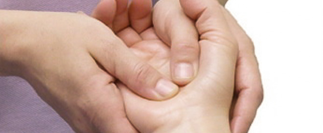
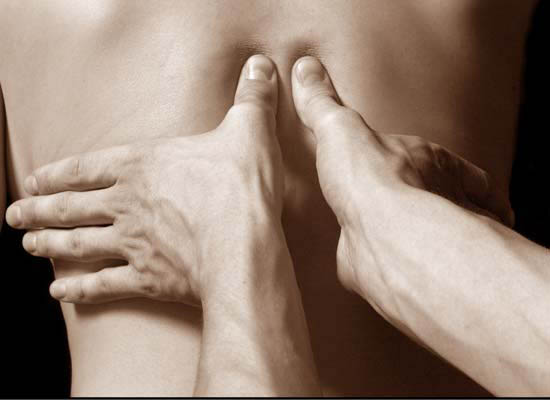

isabelle.integmed@icloud.com
512-879-6555
(no text messages)
WELCOME ABOUT SERVICES PEDIATRICS APPOINTMENTS FAQ
ACUPUNCTURE
ASIAN BODY WORK
CHINESE HERBAL FORMULAS
COMPLEMENTARY TECHNIQUES
Asian Body Work
Asian Bodywork is an umbrella term for a variety of professions rooted in Traditional Chinese Medicine, and evolving over 2000 years through the different cultural prisms of China, Japan, Korea, and Thailand. For example Tuina is an integral part of orthopedics in China. We integrate it as a perfect complement to acupuncture via subtle pressure and wrist-rolling activation of the meridians prior to or post needling. 
Acupressure & Meridian Palpation
Palpating and stretching the meridians and using acupressure is particularly effective for conditions involving muscles, tendons and joints, orthopedic problems and sports injuries. It can also be used to treat internal diseases, stimulate acupoints, and diagnose and correct channel imbalances.

Tui Na
Tui Na is suitable for ages 0-100. Normally it is applied over comfortable cotton clothing, allowing for mobility and ease of passive movement and stretches.
Treatments are by appointment and last 45-60 minutes depending upon the ailment.
Can prevent and treat diseases by promoting blood circulation and energy flow.
Facilitates healing of soft tissue injuries, improves joint mobility and nerve regulation, and adjusts the functions of the internal organs and cellular tissue metabolism.
Techniques range from gentle, relaxing movements (rolling, vibration, rocking, thumb meditations, holding, pushing, grasping and passive range of motion) to deep and invigorating techniques (plucking, scrubbing, skin rolling). Work addressing specific problem areas of the body.
- Sore muscles
- Joint mobility
- Tension headache
- Temporal Mandibular Joint Dysfunction
- Neck/Shoulder tension
- Frozen shoulder
- Tennis/Golfer's Elbow
- Carpal tunnel syndrome
- Lumbar pain, Sciatica, Piriformis syndrome
- Scoliosis
- SI joint disorders
- Knee pain
- Ankle strains or sprains
- Plantar fasciitis
- Stress
- Anxiety
- Depression
- Insomnia
- PMS symptoms
- Dysmenorrhea
Qigong means "life energy cultivation" and is traditionally seen as a method to cultivate and balance qi. The practice involves rhythmic movement, focused breathing, and concentrated awareness. Qigong is a gentle meditative exercise that promotes healing of the mind and body.